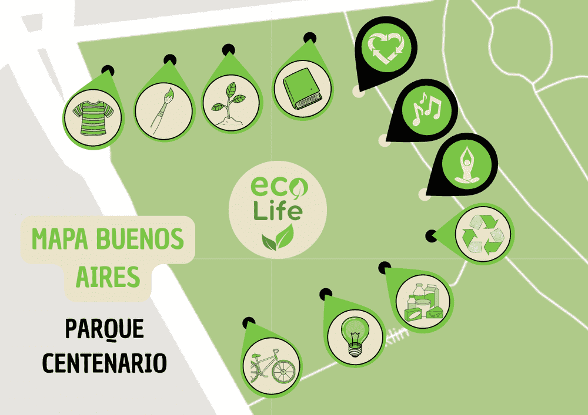
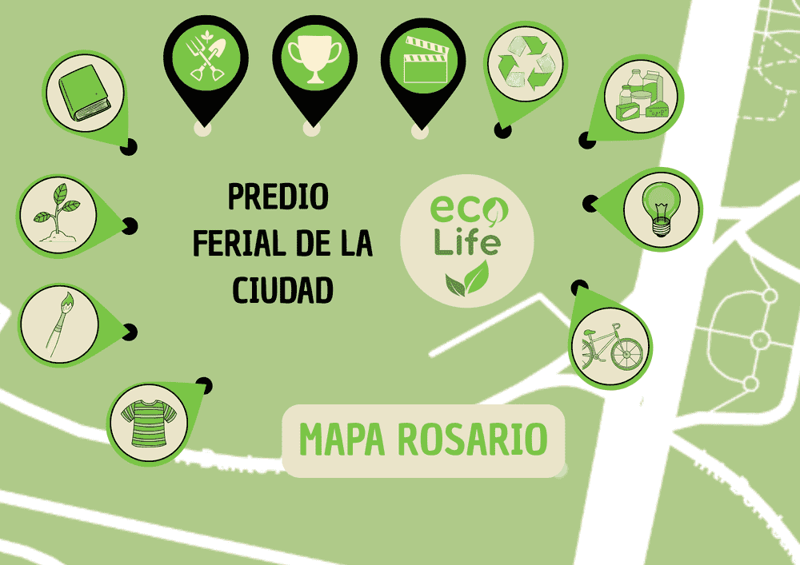

ITINERARIO
Descubre las ciudades y fechas de la feria, los horarios de visita, la capacidad máxima y la disponibilidad de estacionamiento.
| CIUDAD | LOCACIÓN Y DÍAS | HORARIO | CAPACIDAD | ESTACIONAMIENTO |
|---|---|---|---|---|
|  Buenos Aires |
Parque Centenario Jueves a Domingo |
10:00 a 19:00 Últ. ingreso 18:30 |
5.000 personas Capacidad máx. |
Disponible, gratuito |
| Córdoba |
Parque Sarmiento Viernes a Domingo |
11:00 a 20:00 Últ. ingreso 19:30 |
3.000 personas Capacidad máx. |
Disponible, gratuito |
|  Rosario |
Predio Ferial de la Ciudad Sábado y Domingo |
12:00 a 21:00 Últ. ingreso 20:30 |
4.000 personas Capacidad máx. |
Disponible, gratuito |
Nuevas ciudades y fechas se irán sumando a lo largo del año. ¡Mantente atento a nuestras redes sociales!
EVENTOS ESPECIALES EXCLUSIVOS POR CIUDAD
- ♻️ Taller de reciclaje creativo
🗓 Todos los dÍas a las 15:00hs – Actividad práctica para reutilizar materiales creativamente. - 🧘‍♂️ Clase de yoga ecológica
🗓 Todos los dÍas a las 17:00hs – Sesión de yoga para reconectar con el cuerpo y la naturaleza, en un entorno verde, guiada por profesionales. Se utilizan elementos reciclables y biodegradables - 🶠Show musical sustentable
🗓 Todos los dÍas a las 18:30hs – Con instrumentos reciclados y mensaje ambiental.
- 💪 Eco-gym al aire libre
🗓 Todos los dÍas a las 15:00 hs – Clase abierta de ejercicios funcionales y estiramiento guiado por instructores, utilizando elementos reciclados. - 🥕 Cocina saludable en vivo
🗓 Todos los dÍas a las 17:00hs – Recetas sostenibles y nutritivas en acción. - 🛍️ Trivia sustentable con premios ecológicos
🗓 Todos los dÍas a las 18:30 hs hs – Una competencia en equipo donde se responden preguntas sobre medio ambiente, reciclaje y sustentabilidad.
- 🌱 Taller de huerta urbana
🗓 Todos los dÍas a las 14:00 hs – Crear huertas en espacios reducidos. - 🥠Cine ambiental al aire libre
🗓 Todos los dÍas a las 20:00 hs – Cortos y documentales ecológicos. - 🨠Concurso de arte reciclado
🗓 Todos los dÍas a las 16:00hs – Obras creadas con materiales reciclados.